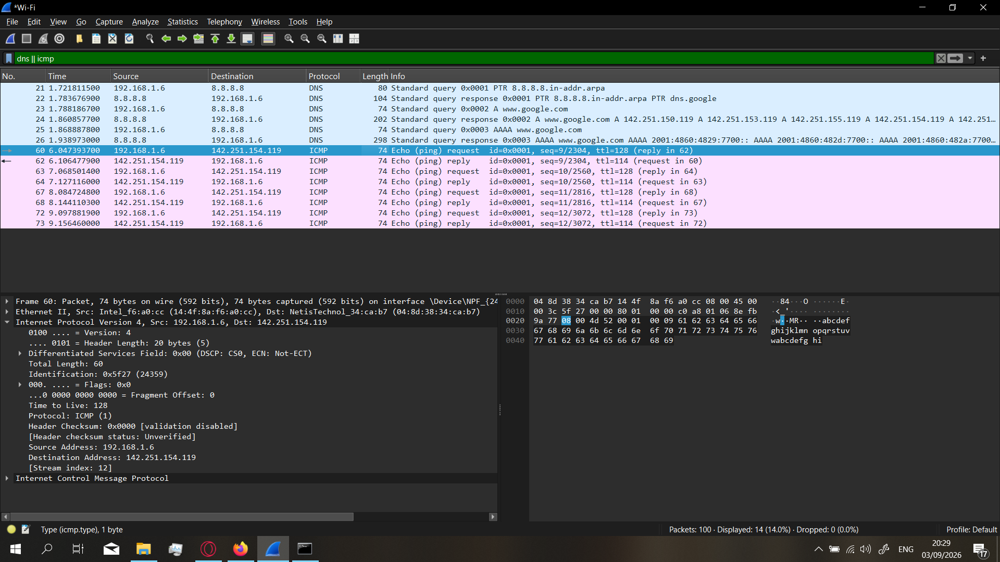

Packet-level visibility is what separates "the network is slow" from "the DNS resolver is taking 400ms per query because the OS is falling back to the secondary server after the primary times out." It's the diagnostic layer underneath every monitoring tool, every application log, and every service dashboard — the raw record of what actually travelled across the wire.
This engagement captures live traffic from a physical network interface and audits two of the most fundamental protocols in the TCP/IP stack: DNS for name resolution and ICMP for diagnostic reachability. The goal is not merely to see packets — it's to read them accurately, layer by layer, and derive operational intelligence that would be invisible to a higher-level observer.
Capture was performed on a lab network with a single analyst workstation. No third-party traffic was inspected, and no decryption or session reconstruction was attempted — the audit is deliberately limited to protocol headers visible in plaintext, which is the correct scope for a connectivity and resolver-behaviour investigation.
Capture Initialization & Filter Design
Wireshark captures at the driver layer, not the application layer. On Windows this means installing the Npcap packet capture driver, which exposes the raw NIC to user-space software — the same mechanism tools like Nmap use for their SYN-scan technique. Once Npcap is in place, Wireshark can read frames directly off the interface without any application cooperation.
Capture was initialized against the active physical Wi-Fi NIC. Because a modern endpoint receives hundreds of packets per second of background chatter — ARP, mDNS, DHCP, TLS heartbeats, service advertisements — a raw capture becomes unusable without filtering. The first filter applied was a capture-time scope limiter that narrowed the stream to only the protocol families under audit:
dns || icmp
The || operator is a logical OR — the filter keeps any frame that matches
either condition and discards everything else. That single expression reduced a
live capture of 100 frames down to a focused set of 14 relevant packets, exactly the
ones relevant to this audit. This is the analyst's leverage: the difference between
reading a needle in a haystack and moving the haystack out of the way.
Layer-4 DNS Header Dissection
DNS is a lightweight request-reply protocol that rides on top of the connectionless UDP transport layer. That choice is deliberate: name resolution is a single packet in, single packet out, with no need for TCP's handshake overhead. The trade-off is that DNS has no built-in retransmission — if a query packet is lost, the client must simply ask again.
In the capture, several DNS queries originated from the local host toward
8.8.8.8, Google's public resolver. Reading the frame detail revealed the
full structural anatomy of a DNS query:
- Transport layer — UDP. The client selected a randomized high-numbered ephemeral source port and addressed the packet to destination port 53, the well-known UDP port reserved for DNS. The ephemeral source port is randomly reassigned for every query as a defensive measure — it prevents an off-path attacker from predicting the response port and spoofing a reply.
-
Query type — A record. The frame carrying
www.google.comwas a standard query for type A — an IPv4 address lookup. The name is sent in plaintext, because DNS by default is not encrypted; anyone on the path can see which hosts the client is resolving. -
Response — multiple A records. The server replied with four
distinct IPv4 addresses in a single response packet
(
142.251.150.119,.153.119,.155.119,.154.119). Multiple answers in one DNS response are the resolver's way of returning anycast endpoints and load-balanced backends, and clients typically rotate between them for resilience and performance. - Parallel AAAA query. Immediately following the A query, a second DNS request went out for type AAAA records on the same hostname — the IPv6 equivalent. Modern operating systems issue A and AAAA queries in parallel so the stack can pick the fastest transport (often IPv6, when both are available) without waiting for the first to resolve.
Reading these fields correctly is what enables the practical DNS diagnostics that packet capture exists to serve: detecting a slow resolver by comparing query/response timestamps, identifying a client bypassing internal DNS by looking at where port 53 traffic is actually going, and detecting DNS tunneling by spotting abnormally large query payloads or unusual query types.
Layer-3 ICMP Traversal Mapping
The second protocol under audit was ICMP — the diagnostic and error-reporting protocol
that underlies every ping and traceroute utility. After the
DNS resolution completed, an ICMP echo sequence began toward one of the returned A
records, giving the capture a natural narrative arc: name resolved, then reachability
validated.
Each ICMP frame was dissected down to its IPv4 header, revealing three structural attributes worth examining:
-
Control bits — Type 8 / Type 0. ICMP is a type-coded protocol. An
echo request carries Type 8, and the corresponding reply carries
Type 0. The pairing of a Type 8 frame with a Type 0 frame from the
same
idfield is the physical proof that a host is reachable — the most primitive form of network health check, and the raw evidence underneath every monitoring dashboard. - Time to Live — 128 outbound, 114 inbound. The request left the workstation with a TTL of 128 (the Windows default), and the reply arrived with a TTL of 114 — a difference of 14 hops traversed in the return direction. TTL is a hop counter, not a time value, and the delta between the outbound and inbound TTL is one of the most reliable forensic signals in network analysis: it allows an analyst to estimate physical network distance, and to detect route changes over time when the delta shifts.
-
Payload identification. The
idfield (0x0001) is generated by thepingutility itself and used to match each reply to its corresponding request. Theseqfield (9/2304in the captured frame) increments per echo pair, and matching a request's seq to a reply's seq is how the utility determines which replies belong to which requests when multiple ping processes run concurrently.
Beneath the protocol fields, the raw hex dump at the bottom of the capture pane shows the frame exactly as it traversed the wire: the Ethernet II header with source and destination MAC addresses, the IPv4 header with version/header-length flags, the TTL and protocol fields, and the ICMP payload. Seeing the bytes laid out this way is the final layer of the audit — it converts every header the tree view describes into concrete, physical, bit-level structure.
Diagnostic Outcomes
The capture yielded two categories of result — a structural validation of the TCP/IP model as it exists in practice, and a set of practical diagnostic capabilities that transfer directly to production operations.
- TCP/IP structural model validated in practice. Every layer of the theoretical stack was present and correctly formed in the captured frames — Ethernet II at Layer 2, IPv4 at Layer 3, UDP and ICMP payloads at Layer 4. The encapsulation model isn't abstraction; it's a physical byte layout observable in the capture.
- DNS resolution behaviour mapped end-to-end. The capture recorded the full resolver sequence — parallel A and AAAA queries from a randomised ephemeral port, multi-record responses from a public resolver, and the client's subsequent use of one of the returned addresses. This is the exact sequence any analyst would trace when diagnosing a slow-resolution complaint.
- Network path distance inferred from TTL delta. The 14-hop gap between the outbound (128) and inbound (114) TTL values is a network-distance signature. Repeated captures over time would detect route changes — an unexpected drop to 5 hops or a rise to 25 hops would signal an infrastructure event worth investigating, all without needing access to any intermediate device.
- Practical diagnostic foundation established. Packet-level analysis at this depth is what enables the investigation of otherwise invisible problems: identifying slow DNS server delays, tracing the origin of connectivity drops that monitoring tools report as "intermittent," and detecting data-leakage patterns in plaintext protocols where credentials or identifiers are transmitted without encryption.
Packet-level diagnostic capability confirmed. The audit demonstrated the ability to capture live traffic, filter it to the protocols of interest, and dissect every structural field required for real operational diagnostics — transport selection, header flags, control bits, TTL deltas, and payload identification. This is the layer where network problems that no log file ever records actually become visible.

dns || icmp is active in the filter bar, reducing the live capture to
14 of 100 observed frames. The packet list shows DNS queries to the resolver at
8.8.8.8 followed by ICMP Echo request/reply pairs (Type 8 / Type 0)
between the local host and the remote anycast edge. The lower pane renders the
structural dissection of a captured ICMP frame — Ethernet II at Layer 2, IPv4 at
Layer 3 with the TTL and protocol fields visible, ICMP payload at Layer 4 — alongside
the raw byte dump of the same frame.
Security & Data Privacy Note
Public infrastructure IP signatures and private hardware physical addresses (MAC
layers) visible within the raw capture file streams have been purposefully filtered
or redacted within the primary telemetry visuals to guarantee local network
anonymity. Public resolver addresses shown in the packet list (such as
8.8.8.8) are well-known service endpoints and do not expose private
infrastructure.